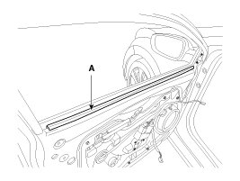
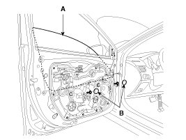

Front Door Window Glass: Service and Repair
Replacements
Glass Replacement
1. Remove the front door trim.
2. Remove the front door belt inside weatherstrip (A).

3. Remove the glass mounting hole plug (B).
CAUTION:
- Use the door switch to align the mounting hole/bolt with the hole in the door.
- If unable to operate the window motor, remove the motor and align the hole by hand.
- Be careful not to drop the glass and/or scratch the glass surface.
4. Carefully adjust the glass (A) until you can see the bolts, then loosen them. Separate the glass from the glass run and carefully pull the glass out through the window slot.
Tightening torque:
3.9 - 2.9 N.m (0.4 - 1.2 kgf.m, 11.8 - 8.7 lb-ft)

5. Installation is the reverse of removal.
NOTE:
- Roll the glass up and down to see if it moves freely without binding.
- Adjust glass position as needed.
- Make sure the door lock and opens properly.
- Replace any damaged clips.